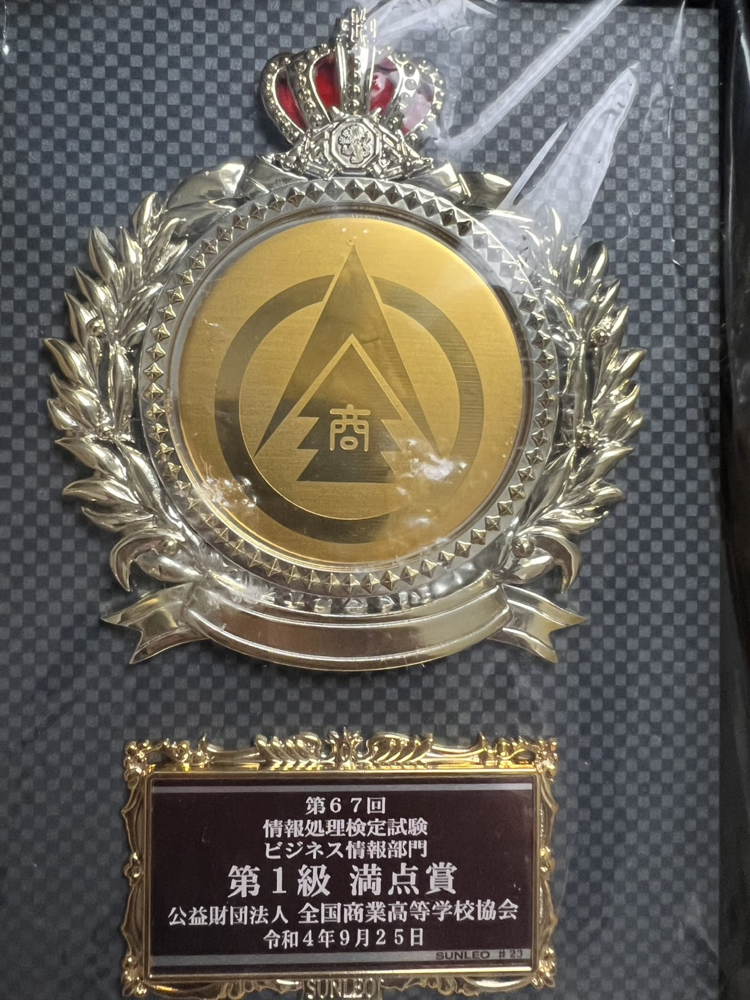

名前:松山煌晟(まつやまこうせい)
年齢:21歳
学校:熊本情報ITクリエイター専門学校/ゲームクリエイター学科
プログラミング歴:6年
使用・学習した言語:VBA/SQL/HTML/C/C++/C#/PHP
「帰ったらあのゲームがあるから今日は学校頑張ろう！」
ゲームがあるから明るく生活できた日、親友と1日中ゲームで遊んだ日々
ゲームのおかげで幸せに過ごせた日がたくさんあるので、
自分が心血を注ぐなら、ゲーム作りに注いで
自分のように多くの人を笑顔にして少しでも日常を明るくしたいと想い、
プログラミングの勉強ができる高校に入学して今までゲームクリエイターになるために頑張ってきました。

高校では情報研究同好会という部活に3年間所属し、1年次から1級の資格や、
情報処理の競技大会に出場してきました。
200点満点の全商情報処理検定1級に198点で合格し、ITパスポートなどを取得し、
3年次には、部長を務め全商英語検定1級を取得し、卒業時に最多資格取得者として表彰していただきました。
専門学校に入ってからはゲームプログラマやプロジェクトリーダーとして多くの制作に携わり、
プログラミング・ゲームデザイン・リーダーとしての制作の仕方などを学んできました。
長所はコード読解力と向上心です。
高校時に競技大会の制限時間の中で穴あきのコーディングやフロウチャートを
読み解いてきたので、自分よりレベルが高いコードでも読み解くことが得意になり、
高校や専門学校ではよく、バグに詰まっている人のコードを読んで解消していました。
高校時から何かをやるのであれば、常に最高のクオリティを目指したいと思うようになり、
周りよりうまくできても慢心せず、サボらずに上を目指して物事に取り組んでいます。
誰よりもゲームの面白さを追求できる自信があります、
今はまだ昨日のコードをみても改善点が見えてしまうレベルの実力ですが、
絶対に信頼できる実力をつけて、
神ゲーを作って多くの人を幸せにできるゲームクリエイターになります。